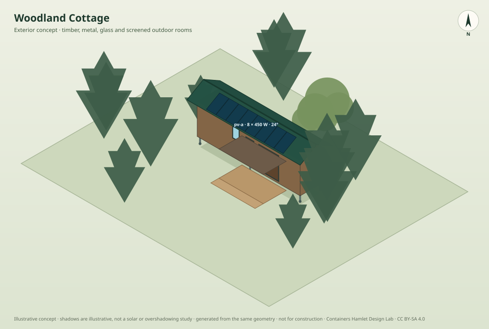
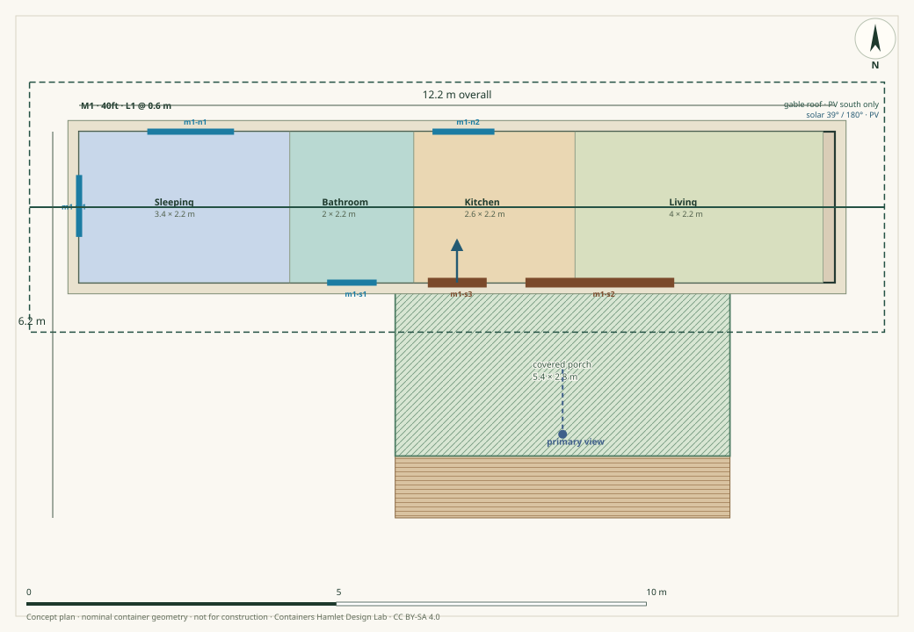
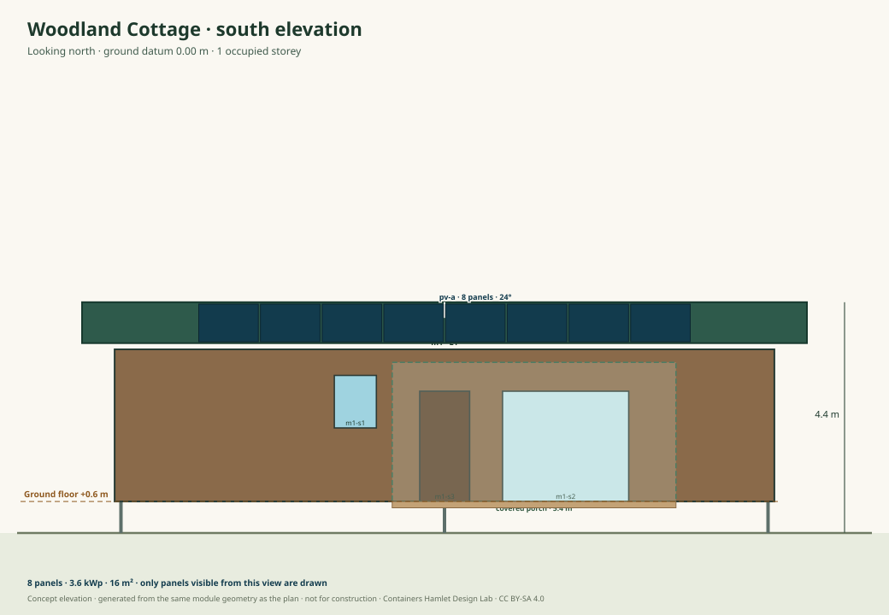
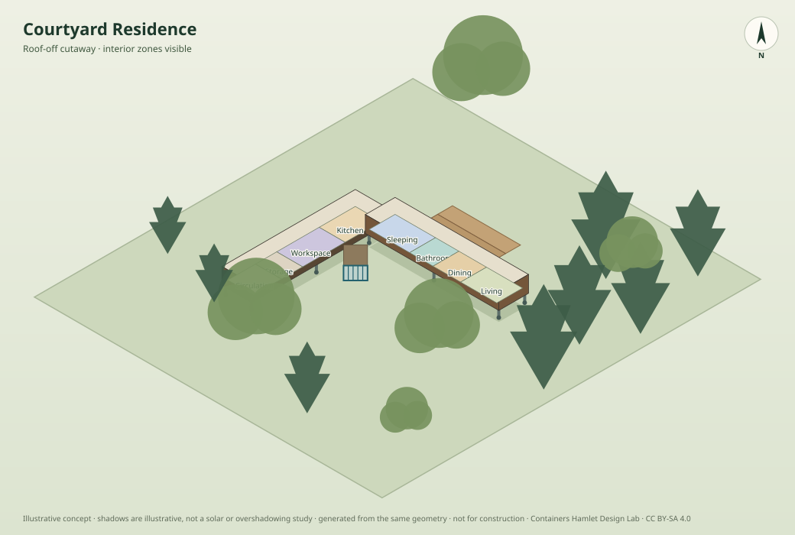
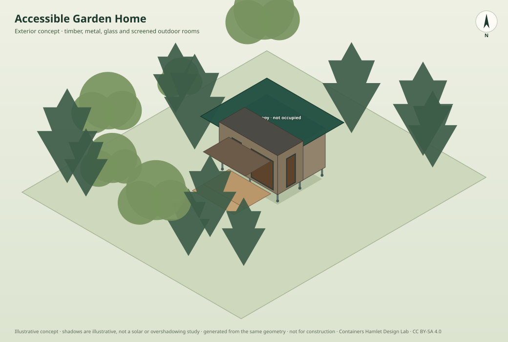
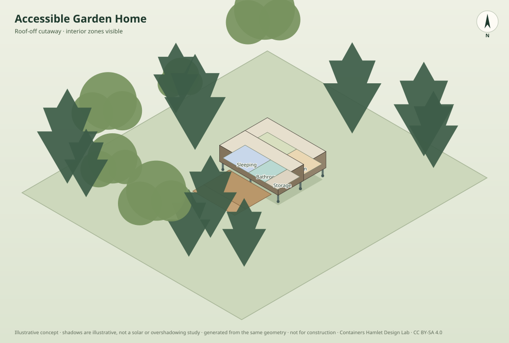
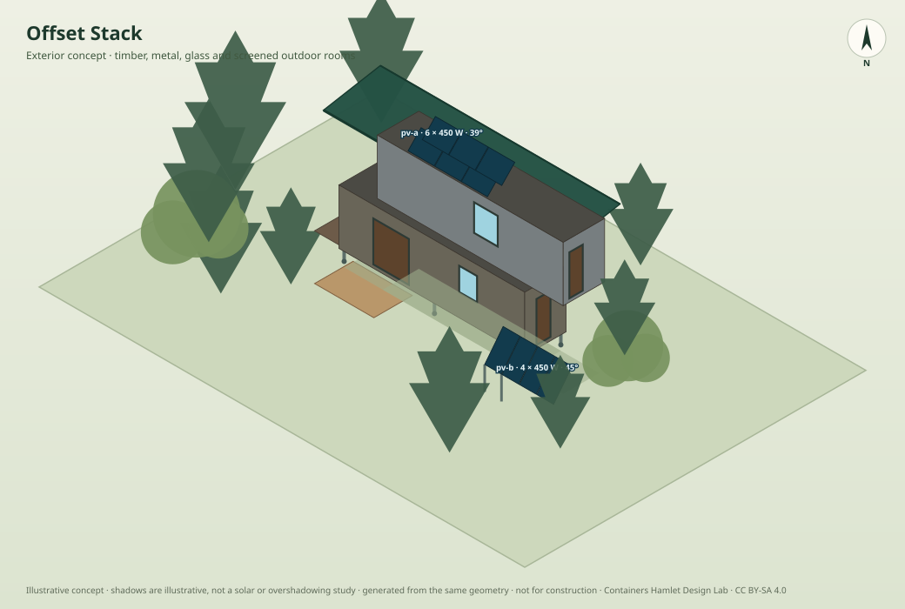
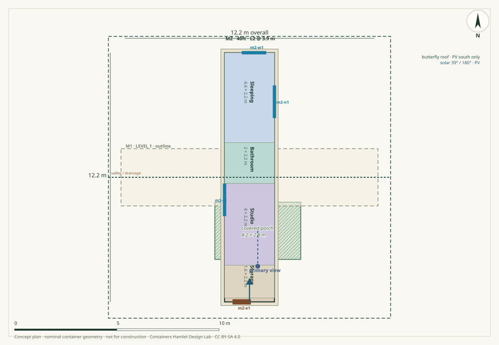
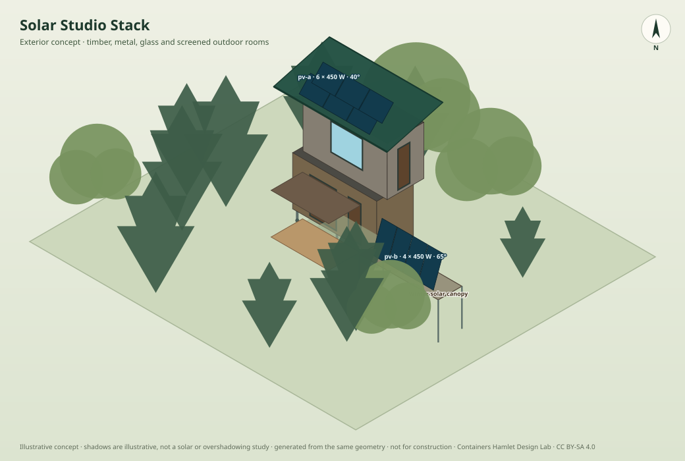
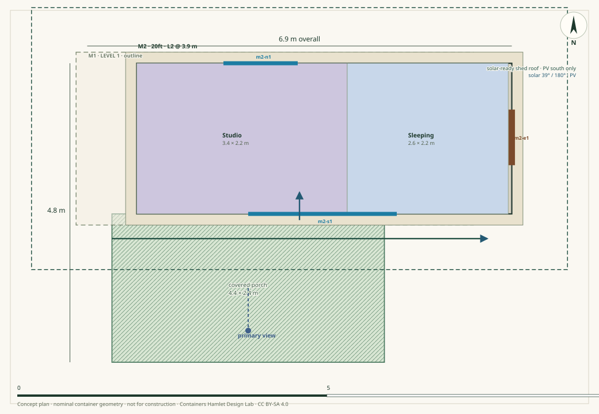

Six deliberately different container homes and a common lodge for the fictional Containers Hamlet. Some are single-storey; some stack two containers. They differ in massing, roof, footprint, entrance and circulation, not just colour. Start with one, two or three reused shipping containers, then explore windows, porches, decks, insulation, roof options and the rooms inside.
Concept only. These are not engineered plans, permit drawings, a building code assessment or a real property offering. Container modifications need structural, envelope, fire, transport and foundation review.
No login, account, upload or backend. Designs stay in your browser until you choose to download them.
How to read this gallery
Floor-specific plansGround and upper plans generated from the same model. When one floor is selected, the other stays visible as a muted outline.
Elevations and sectionFour elevations and a building section generated from the same module elevations, openings and roof. Rooflines are conceptual, not construction details.
Simulated viewsThe exterior, porch, cutaway, exploded levels and seasonal solar studies explain the design. They are not engineering drawings.
Exterior insulation assemblies and four planting systems are documented in the vegetation and envelope guide. Plans, elevations, sections, exploded levels and isometric views come from one multi-container JSON model. The editable designs can be changed in the editor, then exported as JSON, SVG or a ZIP. The source JSON is available for every concept.
Why the homes are intentionally different
One or two storeys. A single-storey home avoids stairs and keeps every essential room on one level. A two-storey home can use a smaller ground footprint, but adds structure, stairs, fire separation and vertical-access constraints.
Why stacking can be attractive. Stacking can reduce ground coverage, foundation area and site disturbance. It does not automatically reduce cost, carbon or energy use, and it is not automatically accessible.
Why stacking is difficult. A container directly above another is not automatically supported. The project records support intent, calculates the geometric bearing overlap and reports the rest for professional review.
Shared construction principles. The homes use the same container-first approach, drained and ventilated exterior assemblies, independent foundations and replaceable components. Shared systems reduce unnecessary complexity without forcing identical buildings.
No engineering approval. Every design is a concept. Structural, envelope, fire, accessibility and foundation work still needs qualified professionals and local approvals.
The hamlet model is a comparison tool. It helps a community discuss trade-offs in floor area, ground coverage, privacy, access and maintenance. It is not a planning application or a construction estimate.
The Design Lab supports experimentation. Change a level, stack, offset, roof or circulation strategy, then compare the generated plans, elevations and section. The model reports geometric consequences and review items; it does not decide which home is best.
Licensing: Design Lab source code is AGPL-3.0-or-later. Original Design Lab documentation, diagrams and sample concept data are CC BY-SA 4.0. The rest of Containers Hamlet remains MIT (code) and CC BY 4.0 (original content). See the Design Lab licence and content licence.
Six intentionally different hamlet residences
Each selected home has its own massing, roof, arrangement, interior and relationship to the ground. Three are single-storey and three are two-storey. They share construction principles, not a single look. Two homes are designed as whole-home wheelchair-accessible demonstrations; the others are not held to that target.
Single storey
Single-storey homes. Two are whole-home accessibility demonstrations; the others are ordinary concept homes.

Hamlet selected · Editable
Woodland Cottage
A compact, step-free cottage under a pitched roof, with a covered porch and direct garden access.
A single-storey 40-foot container cottage with an accessible internal route and washroom. The plan is deliberately simple: bedroom, bathroom, entrance hall, kitchen and living. The 2.8 m bathroom contains a modeled 1.5 m turning circle; the shared-path grades and professional accessibility review remain outstanding.
Single storey · 1 × 40ft · 29.7 m² gross floor area · gable roof
Dimensions, access and performance
Storeys
Single storey
Containers
1 × 40ft
Gross floor area
29.7 m² nominal modules plus glazed links
Ground coverage
29.7 m² projected footprint
Roof
gable · 24° pitch · 0.80 m overhang
Interior uses
Sleeping, Bathroom, Kitchen, Living
Outdoor living
5.4 × 2.8 m covered porch and a level garden deck
Accessibility
Ground-floor living with a step-free entrance and an adaptable bathroom target. Not a compliance assessment.
Structural review
Single-level concept; openings, roof and foundation still need engineering review.
Views and source files for Woodland Cottage

Ground-floor concept plan. Nominal dimensions, not verified clearances.

South elevation from the shared geometry. Other elevations and the section are on the architectural page.Roof-off cutaway with the same geometry and interior zones.
Concept only. Not reviewed by an architect, engineer, building official or accessibility consultant.
Hamlet selected · Editable
Courtyard Residence
Two single-storey modules form an L around a sheltered garden courtyard, with rooms opening in several directions.
A long 40-foot module and a perpendicular 40-foot module enclose a private courtyard. Living, dining, kitchen, bathroom, bedroom and workspace open onto the courtyard and the surrounding woodland. The footprint is larger than the cottage, but the home remains single-storey and step-free. A flat green roof is shown as a concept only, with unresolved drainage and load questions.
Single storey · 2 × 40ft · 63.3 m² gross floor area · flat roof
Sheltered courtyard, covered porch and a courtyard deck
Accessibility
Single-storey with a step-free entrance and ground-floor essential functions. Courtyard thresholds need detailing.
Structural review
Single-level concept; openings, roof and foundation still need engineering review.
Views and source files for Courtyard Residence
Ground-floor concept plan. Nominal dimensions, not verified clearances.South elevation from the shared geometry. Other elevations and the section are on the architectural page.

Roof-off cutaway with the same geometry and interior zones.
Concept only. Not reviewed by an architect, engineer, building official or accessibility consultant.

Hamlet selected · Editable
Accessible Garden Home
Two compact modules side by side, designed around a step-free route, generous circulation and an adaptable bathroom and kitchen.
A wide, low single-storey home made of two 20-foot container modules placed side by side to create a double-width plan. The extra width supports a step-free entrance, a 1.2 m circulation route and a bathroom with a 1.5 m turning circle. The bathroom and kitchen remain concept layouts; the shared-path grades have not been surveyed.
Single storey · 2 × 20ft · 29.5 m² gross floor area · canopy roof
Dimensions, access and performance
Storeys
Single storey
Containers
2 × 20ft
Gross floor area
29.5 m² nominal modules plus glazed links
Ground coverage
29.5 m² projected footprint
Roof
canopy · 0° pitch · 1.20 m overhang
Interior uses
Living, Kitchen, Sleeping, Bathroom, Storage
Outdoor living
Covered, step-free garden terrace with a level deck
Accessibility
Step-free entrance, ground-floor bedroom, adaptable bathroom and kitchen, 1.2 m circulation target. A design target, not a compliance assessment.
Structural review
Single-level concept; openings, roof and foundation still need engineering review.
Views and source files for Accessible Garden Home
Ground-floor concept plan. Nominal dimensions, not verified clearances.South elevation from the shared geometry. Other elevations and the section are on the architectural page.

Roof-off cutaway with the same geometry and interior zones.
Concept only. Not reviewed by an architect, engineer, building official or accessibility consultant.
Two storeys
Container homes with an occupied upper level. They add stairs, structure, fire separation and vertical-access questions.

Hamlet selected · Editable
Offset Stack
Two 40-foot modules stacked with a deliberate offset, creating a covered ground-floor room and a distinct upper volume.
A ground-floor living module carries a second 40-foot module shifted 2.6 m east. The offset creates a covered outdoor room and a strong upper volume. Part of the upper floor has no module below it, so the design depends on an engineered transfer or cantilever that is not resolved here. An internal stair serves the upper bedroom and studio.
Two storeys · 2 × 40ft · 59.5 m² gross floor area · shed roof
Dimensions, access and performance
Storeys
Two storeys · 1 upper module
Containers
2 × 40ft
Gross floor area
59.5 m² nominal modules plus glazed links
Ground coverage
36.1 m² projected footprint
Roof
shed · 8° pitch · 0.70 m overhang
Interior uses
Living, Kitchen, Bathroom, Sleeping, Studio
Outdoor living
Covered ground-floor porch under the offset and a small upper balcony
Accessibility
Ground-floor living arrangement with a step-free entrance and a ground bathroom. Upper bedroom is stair-only and is not accessible.
Structural review
1 upper module with a declared, unverified support intent. Stacking, lateral stability and transfer loads require professional review.
Views and source files for Offset Stack
Ground-floor concept plan. Nominal dimensions, not verified clearances.Upper-floor concept plan with the level below muted.South elevation from the shared geometry. Other elevations and the section are on the architectural page.Roof-off cutaway with the same geometry and interior zones.
Concept only. Not reviewed by an architect, engineer, building official or accessibility consultant.
Hamlet selected · Editable
Cross-Stacked Retreat
A ground-floor living bar crossed by a perpendicular upper volume, producing a strong silhouette and a shaded outdoor room.
A 40-foot ground module runs east-west; a second 40-foot module crosses it at 90 degrees on the upper floor. The cross gives the home a distinctive profile and a shaded ground-floor living area. The upper module bears on only the small crossing area, so most of it is unsupported in this concept. The structural warnings are deliberately explicit.
Two storeys · 2 × 40ft · 59.5 m² gross floor area · butterfly roof
Dimensions, access and performance
Storeys
Two storeys · 1 upper module
Containers
2 × 40ft
Gross floor area
59.5 m² nominal modules plus glazed links
Ground coverage
53.5 m² projected footprint
Roof
butterfly · 12° pitch · 0.80 m overhang
Interior uses
Living, Kitchen, Bathroom, Sleeping, Studio
Outdoor living
Shaded covered outdoor room beneath the cross volume and a small upper balcony
Accessibility
Ground-floor living arrangement with a step-free entrance and ground bathroom. Upper floor is stair-only and is not accessible.
Structural review
1 upper module with a declared, unverified support intent. Stacking, lateral stability and transfer loads require professional review.
Views and source files for Cross-Stacked Retreat
Ground-floor concept plan. Nominal dimensions, not verified clearances.

Upper-floor concept plan with the level below muted.South elevation from the shared geometry. Other elevations and the section are on the architectural page.Roof-off cutaway with the same geometry and interior zones.
Concept only. Not reviewed by an architect, engineer, building official or accessibility consultant.

Hamlet selected · Editable
Solar Studio Stack
Two 20-foot modules stacked with a slight offset, giving a compact footprint, a solar-ready roof and an upper studio.
A compact 20-foot ground module holds essential living, a bathroom and a stair. A second 20-foot module sits above with a slight offset, providing a studio and sleeping space. The shed roof is solar-ready and the south facade is shaded by an overhang. The small footprint reduces ground coverage but adds stairs, structure and a more complex envelope.
Two storeys · 2 × 20ft · 29.5 m² gross floor area · solar ready roof
Dimensions, access and performance
Storeys
Two storeys · 1 upper module
Containers
2 × 20ft
Gross floor area
29.5 m² nominal modules plus glazed links
Ground coverage
16.7 m² projected footprint
Roof
solar ready · 12° pitch · 0.90 m overhang
Interior uses
Living, Kitchen, Bathroom, Studio, Sleeping
Outdoor living
Covered south terrace and a small upper balcony
Accessibility
Ground-floor essential living and bathroom, but the upper studio is stair-only. A compact stair is not an accessible vertical-access strategy.
Structural review
1 upper module with a declared, unverified support intent. Stacking, lateral stability and transfer loads require professional review.
Views and source files for Solar Studio Stack
Ground-floor concept plan. Nominal dimensions, not verified clearances.

Upper-floor concept plan with the level below muted.South elevation from the shared geometry. Other elevations and the section are on the architectural page.Roof-off cutaway with the same geometry and interior zones.
Concept only. Not reviewed by an architect, engineer, building official or accessibility consultant.
Looking for the legacy concepts? The nine original concepts, the common lodge and four arrangement studies are on the concept archive page. The main gallery now carries only the six selected homes.
What the Design Lab does not do
It does not calculate structure, energy, fire resistance, acoustics, cost or code compliance. It does not produce construction drawings or a building information model. It does not import real property data or upload your design. It does not add a customised home to the published community layout; the hamlet preview is illustrative only.
Anyone taking a concept further needs a structural engineer, building-envelope consultant, fire protection engineer, accessibility consultant, geotechnical engineer, municipal building department and, where relevant, the conservation authority or provincial regulator.